This document serves as a collection of benchmarks between ragg and
the built-in raster devices provided by the grDevices package. As the
output format is immaterial to the benchmarking, this document will only
compare devices producing png images. The png() function
from grDevices can use different rendering backends, with both different
quality and speed, whereas agg_png() from ragg only
provides a single backend. All backends will be compared here to give
the fullest overview.
All benchmarks will also include timings of the same code with the
void_dev() device from the devoid package. The
void_dev() device is a very simple device that does no
operations on the input it receives. Because of this it serves as a
measure for the time spent on non-rendering operations.
On Mac installation the png() function also offers (and
defaults to) a quartz backend. As this is not available on all systems
it will not be included here. Local tests have shown it to be about as
performant or slightly below ragg.
The present version of this vignette has been compiled on a system without the X11 device. The benchmarkings will thus omit this device, though the text will still refer to it.
Opening and closing
All subsequent benchmarks will omit the opening and closing of the device and instead focus on rendering performance. The most important, and potentially time-consuming, part of opening and closing a device is allocation of a buffer to write raster information to, and serialising the buffer into a file. It is also where performance differences between e.g. png and tiff will come from. As both ragg and grDevices use the same underlying libraries to write to png files (libpng) it is not expected that there is much difference.
file <- tempfile(fileext = '.png')
res <- bench::mark(
ragg = {agg_png(file); plot.new(); dev.off()},
cairo = {png(file, type = 'cairo'); plot.new(); dev.off()},
cairo_png = {png(file, type = 'cairo-png'); plot.new(); dev.off()},
Xlib = if (has_xlib) {png(file, type = 'Xlib'); plot.new(); dev.off()} else NULL,
check = FALSE
)
if (!has_xlib) {
res <- res[-4, ]
attr(res$expression, 'description') <- attr(res$expression, 'description')[-4]
}
plot(res, type = 'ridge') + ggtitle('Open and close performance')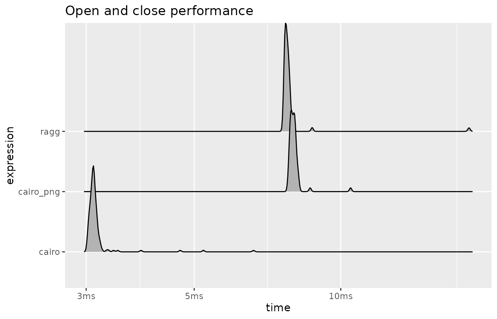
As can be seen, it is not as clear cut as it seems. ragg and
cairo_png have equivalent performance, while Cairo is about twice as
fast. Xlib on the other hand is even slower. Looking at the produced
files we can see that ragg and cairo_png produce files of around 2 KB,
whereas cairo produces files of around 300 B and XLib around 6 KB. The
differences can thus be ascribed to disk write speed more than anything,
and is probably due to different compression and filtering settings
used. ragg uses the default heuristics from libpng, and my guess is that
cairo_png uses this as well. A white rectangle (as produced by
plot.new()) is amenable to a lot of compression and it is
possible that cairo has been tuned for that. It is likely that the
advantage will disappear with more complex plots but it is difficult to
test without inflating it with rendering speed.
Rendering
A graphic device provides a range of methods that R’s graphic engine
will use when it receives plotting instructions from the user. The more
performant each of these methods are, the more performant the graphic
device is as a whole. The range of anti-aliasing options from grDevices
increases here, while ragg has no settings for this and will always draw
with subpixel antialiasing. Below is an attempt to benchmark each of the
device methods by constructing as direct as possible calls to each of
them. Remember, void_dev() provides the baseline.
render_bench <- function(dev_f, ...) {
dots <- rlang::enexprs(...)
force(dev_f)
on.exit(dev.off())
plot.new()
rlang::eval_tidy(expr(bench::mark(!!!dots, min_iterations = 10)))
}
all_render_bench <- function(expr, xlib = TRUE) {
file <- tempfile()
expr <- rlang::enexpr(expr)
res <- list(
render_bench(agg_png(file), ragg = !!expr),
render_bench(png(file, type = "cairo", antialias = 'none'),
cairo_none = !!expr),
render_bench(png(file, type = "cairo", antialias = 'gray'),
cairo_gray = !!expr),
render_bench(png(file, type = "cairo", antialias = 'subpixel'),
cairo_subpixel = !!expr),
if (has_xlib && xlib) render_bench(png(file, type = "Xlib"), xlib = !!expr) else NULL
)
expr <- unlist(lapply(res, `[[`, 'expression'), recursive = FALSE)
res <- do.call(rbind, res)
res$expression <- expr
class(res$expression) <- c('bench_expr', 'expression')
attr(res$expression, 'description') <- names(res$expression)
res$Anti_aliased <- c(TRUE, FALSE, TRUE, TRUE, FALSE)[seq_len(nrow(res))]
res
}
plot_bench <- function(x, title, baseline) {
plot(x, type = 'ridge', aes(fill = Anti_aliased)) +
facet_null() +
geom_vline(xintercept = baseline['elapsed'], linetype = 2, colour = 'grey') +
annotate('text', x = baseline['elapsed'], y = -Inf, label = ' baseline',
vjust = 0, hjust = 0, colour = 'grey') +
scale_fill_brewer(labels = c('No', 'Yes'), type = 'qual') +
labs(title = title, fill = 'Anti-aliased', x = NULL, y = NULL) +
theme_minimal() +
theme(panel.grid.major.y = element_blank(),
legend.position = 'bottom') +
scale_x_continuous(labels = function(x) {format(bench:::as_bench_time(x))})
}Circles
Circles can be drawn with e.g. grid.circle() and are
often used when drawing scatter plots as the default point type. It is
thus of high importance that circle drawing is as performant as
possible, as it may get called thousands of times during the creation of
a plot.
x <- runif(1000)
y <- runif(1000)
pch <- 1
void_dev()
plot.new()
b <- system.time(points(x, y, pch = pch))
invisible(dev.off())
res <- all_render_bench(points(x, y, pch = pch))
plot_bench(res, 'Unfilled circle performance', b)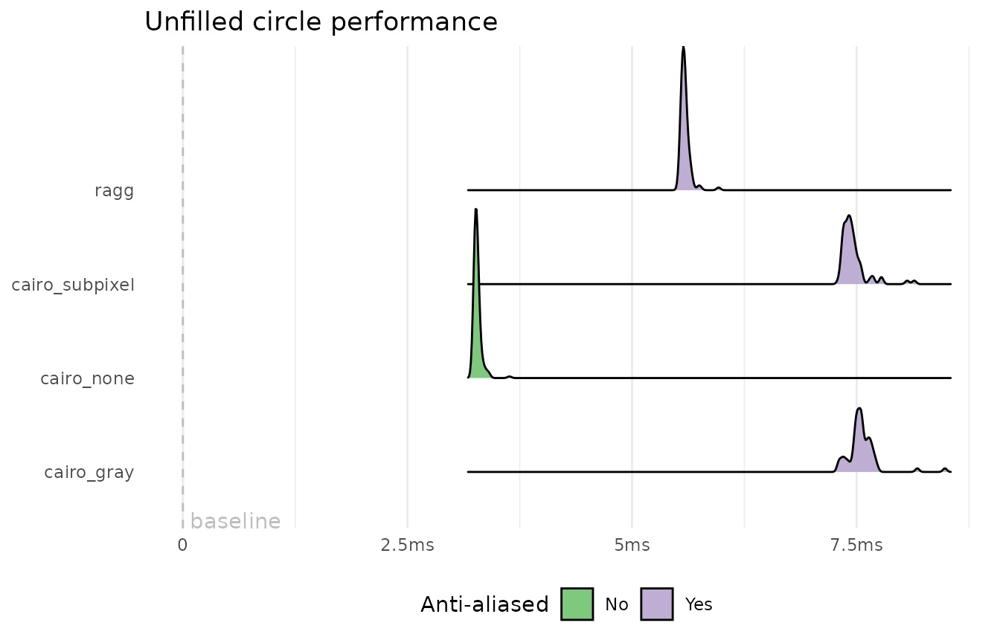
pch <- 19
void_dev()
plot.new()
b <- system.time(points(x, y, pch = pch))
invisible(dev.off())
res <- all_render_bench(points(x, y, pch = pch))
plot_bench(res, 'Filled circle performance', b)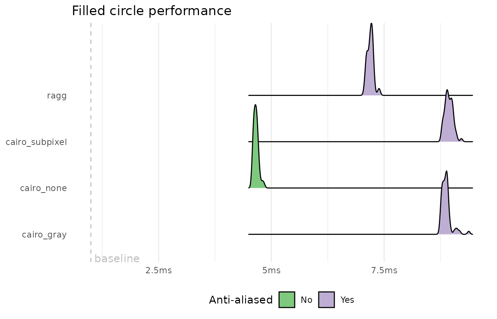
Of all of the antialiased devices it is clear that ragg is the most performant. The performance gain is most pronounced with unfilled circles due to the fact that cairo doesn’t antialias fill, only stroke and text. Xlib is by far the most performant device, but also the one rendering with the lowest quality by far (see the Rendering quality vignette).
Lines
Lines are another fundamental part. They can be used to draw single
line segments directly and are also the workhorse for some of the
different symbol types, e.g. pch = 4, which we will use
here.
pch <- 4
void_dev()
plot.new()
b <- system.time(points(x, y, pch = pch))
invisible(dev.off())
res <- all_render_bench(points(x, y, pch = pch))
plot_bench(res, 'Line segment performance', b)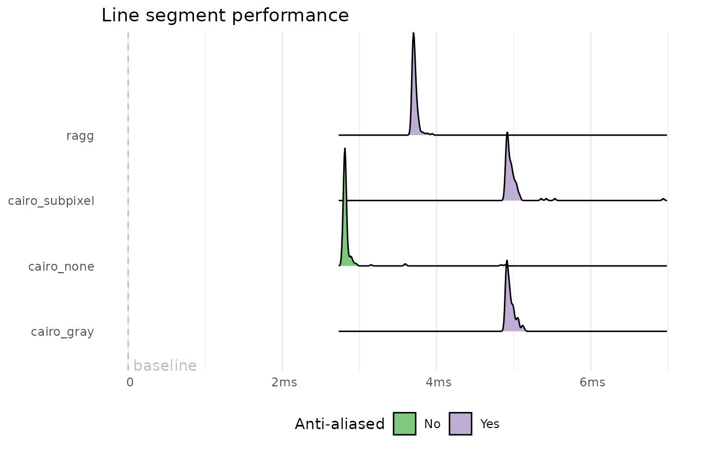
Again, we see a clear performance difference between devices using antialiasing and those that do not. ragg is again the fastest one using anti-aliasing.
Polylines
Polylines are connected line segments. We should expect the same picture as for lines given that the operations are quite similar. We will also test different line patterns here to assess whether there are any differences in the efficency with which patterns are generated.
void_dev()
plot.new()
b <- system.time(lines(x, y))
invisible(dev.off())
res <- all_render_bench(lines(x, y))
plot_bench(res, 'Connected line performance', b)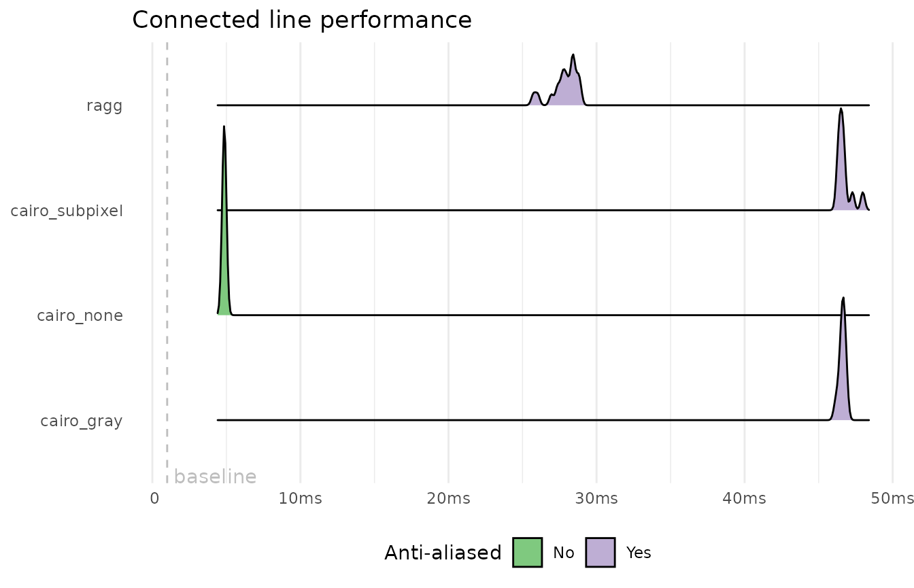
void_dev()
plot.new()
b <- system.time(lines(x, y, lty = 4))
invisible(dev.off())
res <- all_render_bench(lines(x, y, lty = 4))
plot_bench(res, 'Patterned connected line performance', b)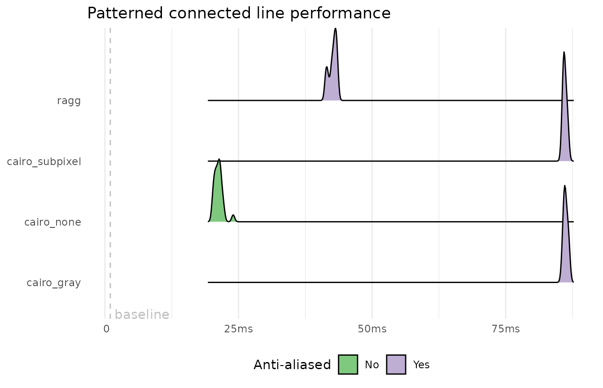
The results here are quite surprising. While the general pattern continues, the anti-aliasing in cairo is much slower than in the other setups. For the patterned test, we see that Xlib is so slow at generating patterned lines that it completely negates its otherwise solid rendering speed leadership (again, at the cost of quality).
Rectangles
Rectangle is another graphic primitive that has its own method. Again, it is used when plotting certain types of points, and this is how we’ll test it:
pch <- 0
void_dev()
plot.new()
b <- system.time(points(x, y, pch = pch))
invisible(dev.off())
res <- all_render_bench(points(x, y, pch = pch))
plot_bench(res, 'Unfilled rectangle performance', b)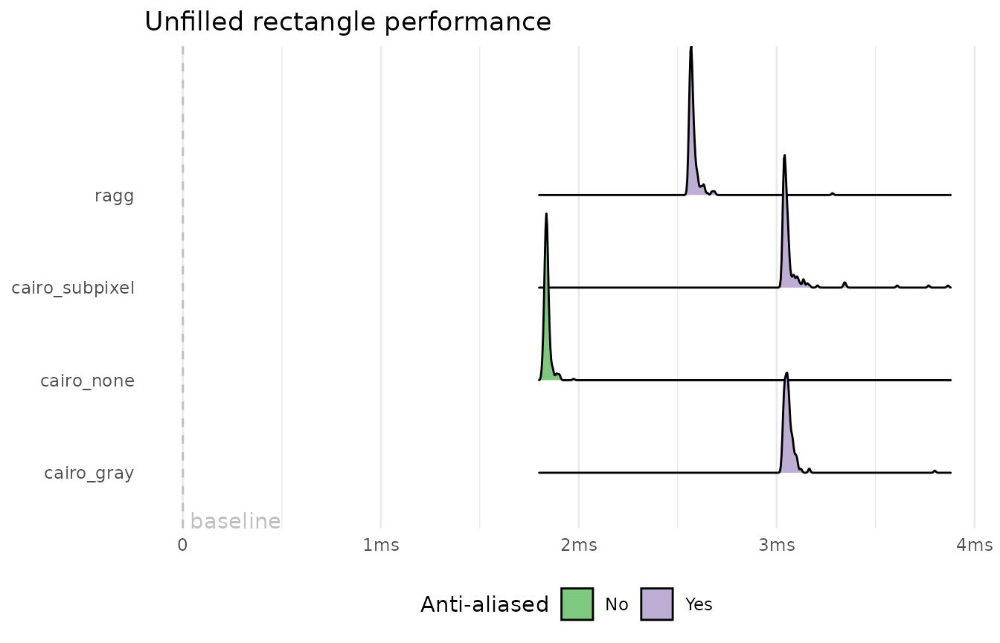
pch <- 15
void_dev()
plot.new()
b <- system.time(points(x, y, pch = pch))
invisible(dev.off())
res <- all_render_bench(points(x, y, pch = pch))
plot_bench(res, 'Filled rectangle performance', b)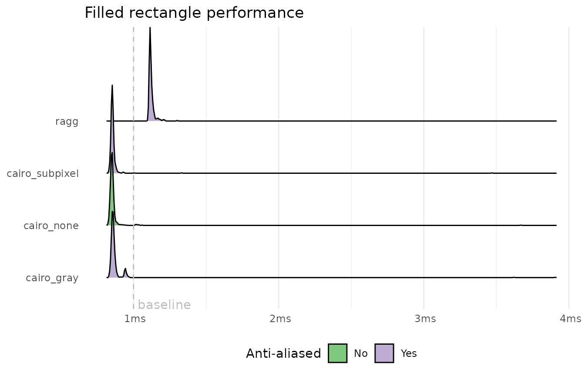
We see a new pattern with the filled rectangles, where ragg is suddenly the slow one. The reason for this is again that cairo does not apply anti-aliasing on fills and drawing a non anti-aliased filled rectangle is extremely simple.
Polygons
Polygons are the general case of what we’ve seen with circles and rectangles. While certain optimisations may be possible for e.g. rectanges, the polygon method of a device needs to handle all cases. It is used in points for e.g. triangles, but we will also test performance for bigger, more complex polygons.
pch <- 2
void_dev()
plot.new()
b <- system.time(points(x, y, pch = pch))
invisible(dev.off())
res <- all_render_bench(points(x, y, pch = pch))
plot_bench(res, 'Simple polygon performance', b)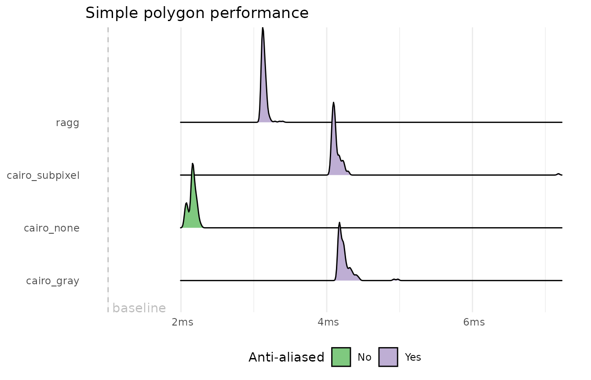
void_dev()
plot.new()
b <- system.time(polygon(x, y))
invisible(dev.off())
res <- all_render_bench(polygon(x, y))
plot_bench(res, 'Unfilled complex polygon performance', b)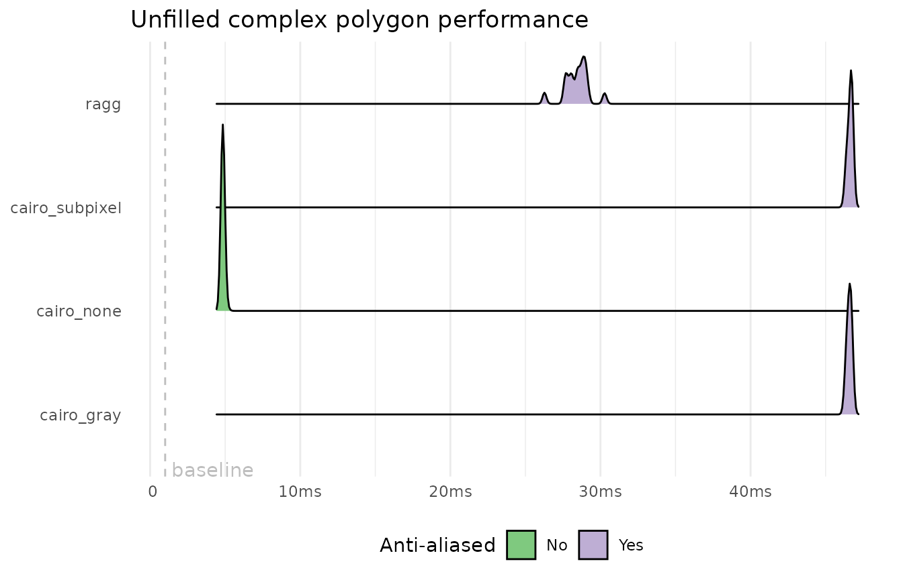
void_dev()
plot.new()
b <- system.time(polygon(x, y, border = 'gray', col = 'black'))
invisible(dev.off())
res <- all_render_bench(polygon(x, y, border = 'gray', col = 'black'))
plot_bench(res, 'Filled complex polygon performance', b)
The findings here reflect what is seen above. ragg is faster when it comes to drawing the lines, but loses the advantage with fill as it is the only one performing anti-aliasing fill.
Paths
Paths are the supercharged versions of polygons with support for holes and whatnot. It is one of the features that was added later in the lifetime of the R graphic engine and devices can thus elect not to support it. Most do, however, including cairo, but not Xlib. In ragg, path rendering is implemented in the same way as polygon rendering (the polygon method being a special case of the path method), but how the other devices implement it is not something I know.
section <- rep(1:10, each = 100)
x_path <- unlist(lapply(split(x, section), function(x) c(x, NA)))
y_path <- unlist(lapply(split(y, section), function(x) c(x, NA)))
x_path <- x_path[-length(x_path)]
y_path <- y_path[-length(y_path)]
void_dev()
plot.new()
b <- system.time(polypath(x_path, y_path, rule = 'evenodd'))
invisible(dev.off())
res <- all_render_bench(polypath(x_path, y_path, rule = 'evenodd'),
xlib = FALSE)
plot_bench(res, 'Unfilled path performance', b)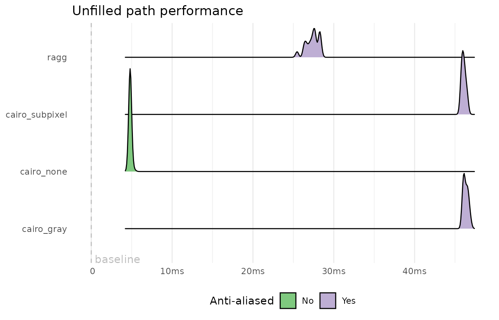
void_dev()
plot.new()
b <- system.time(polypath(x_path, y_path, rule = 'evenodd', border = 'gray',
col = 'black'))
invisible(dev.off())
res <- all_render_bench(polypath(x_path, y_path, rule = 'evenodd',
border = 'gray', col = 'black'),
xlib = FALSE)
plot_bench(res, 'Filled path performance', b)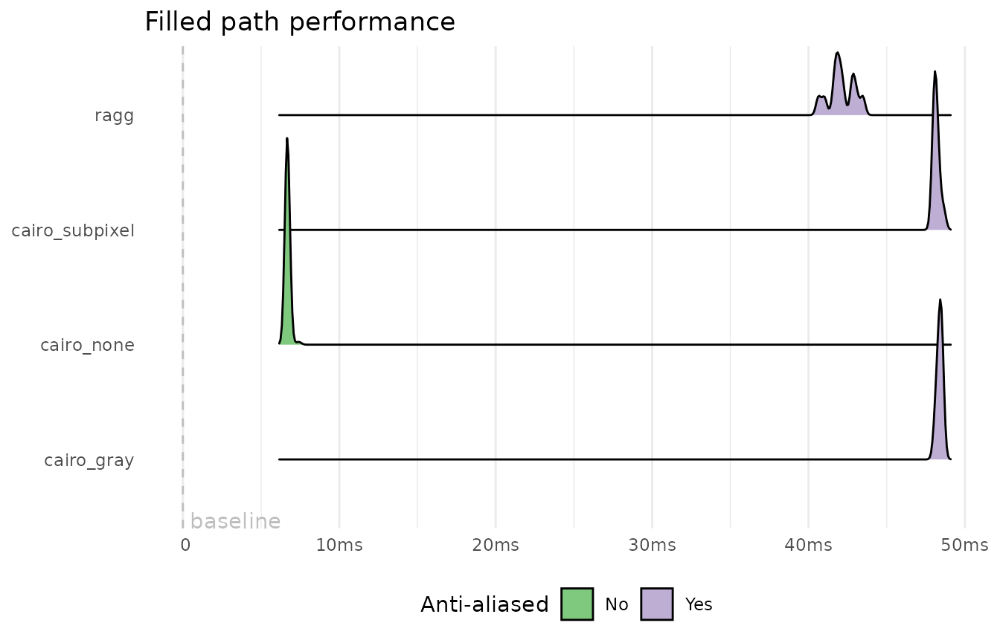
The path performance mirrors that of the other shape rendering. ragg is faster when it comes to drawing the stroke, but the speed advantage is almost lost when the shape is filled as well as cairo do not anti-alias fill. Xlib is not present here as path rendering is unsupported.
Raster
The ability to draw raster images is also one of the later capabilities added to the graphic engine. Again, you don’t have to support it, but all the devices we look at do. Raster images can be rotated, and they can be interpolated or not during scaling. How interpolation happens is device specific, so there’s a lot of room for quality differences which we will not look at here.
raster <- matrix(hcl(0, 80, seq(50, 80, 10)), nrow = 4, ncol = 5)
void_dev()
plot.new()
b <- system.time(rasterImage(raster, xleft = rep(0.25, 100), ybottom = 0.25,
xright = 0.75, ytop = 0.75, interpolate = FALSE))
invisible(dev.off())
res <- all_render_bench(rasterImage(raster, xleft = 0.25, ybottom = 0.25,
xright = 0.75, ytop = 0.75,
interpolate = FALSE))
plot_bench(res, 'Non-interpolated, non-rotated raster performance', b)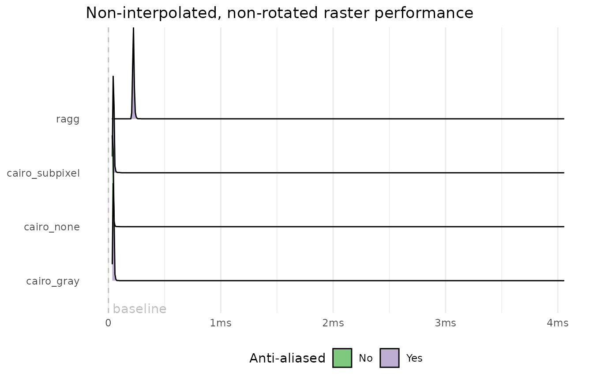
void_dev()
plot.new()
b <- system.time(rasterImage(raster, xleft = rep(0.25, 100), ybottom = 0.25,
xright = 0.75, ytop = 0.75, interpolate = FALSE,
angle = 27))
invisible(dev.off())
res <- all_render_bench(rasterImage(raster, xleft = 0.25, ybottom = 0.25,
xright = 0.75, ytop = 0.75,
interpolate = FALSE, angle = 27))
plot_bench(res, 'Non-interpolated, rotated raster performance', b)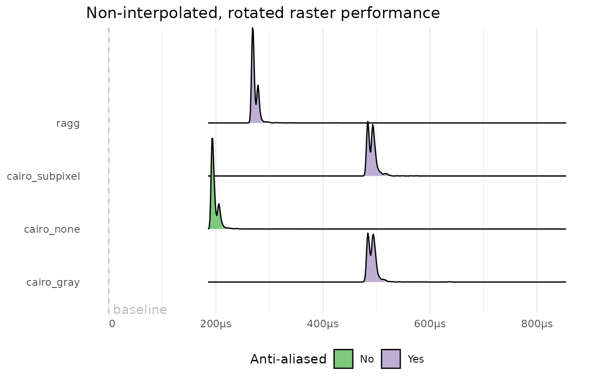
void_dev()
plot.new()
b <- system.time(rasterImage(raster, xleft = rep(0.25, 100), ybottom = 0.25,
xright = 0.75, ytop = 0.75, interpolate = TRUE))
invisible(dev.off())
res <- all_render_bench(rasterImage(raster, xleft = 0.25, ybottom = 0.25,
xright = 0.75, ytop = 0.75,
interpolate = TRUE))
plot_bench(res, 'Interpolated, non-rotated raster performance', b)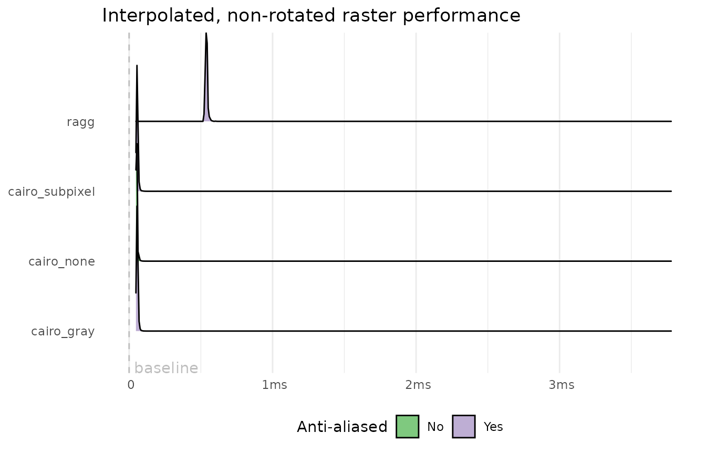
void_dev()
plot.new()
b <- system.time(rasterImage(raster, xleft = rep(0.25, 100), ybottom = 0.25,
xright = 0.75, ytop = 0.75, interpolate = TRUE,
angle = 27))
invisible(dev.off())
res <- all_render_bench(rasterImage(raster, xleft = 0.25, ybottom = 0.25,
xright = 0.75, ytop = 0.75,
interpolate = TRUE, angle = 27))
plot_bench(res, 'Interpolated, rotated raster performance', b)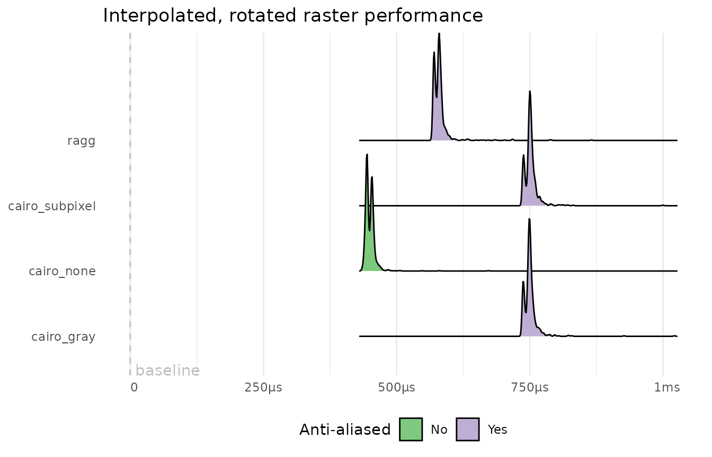
Plotting rasters is wicked fast it appears. For non-rotated rasters ragg is a tiny bit slower than cairo, maybe due to anti-aliasing of the edges. The loss is gained again when it comes to rotation, indicating a more performant affine transformation implementation. Xlib is significantly slower here, for reasons beyond me.
Text
Text in data visualisation is crucial, and one of the hardest parts when implementing a graphic device. This is reflected in e.g. the inability of the native devices to find system fonts, thus having to rely on e.g. the extrafont or showtext packages for that. Anyway, again we only look at performance in this document.
pch <- "#"
void_dev()
plot.new()
b <- system.time(points(x, y, pch = pch))
invisible(dev.off())
res <- all_render_bench(points(x, y, pch = pch))
plot_bench(res, 'Single character performance', b)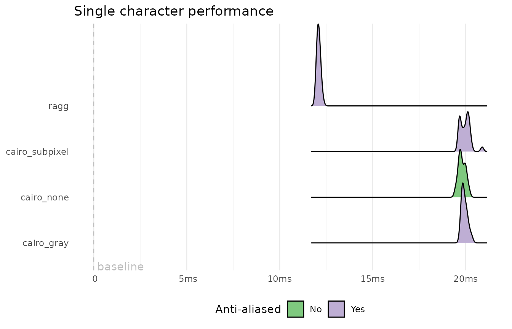
void_dev()
plot.new()
b <- system.time(text(x, y, label = 'abcdefghijk'))
invisible(dev.off())
res <- all_render_bench(text(x, y, label = 'abcdefghijk'))
plot_bench(res, 'Text string performance', b)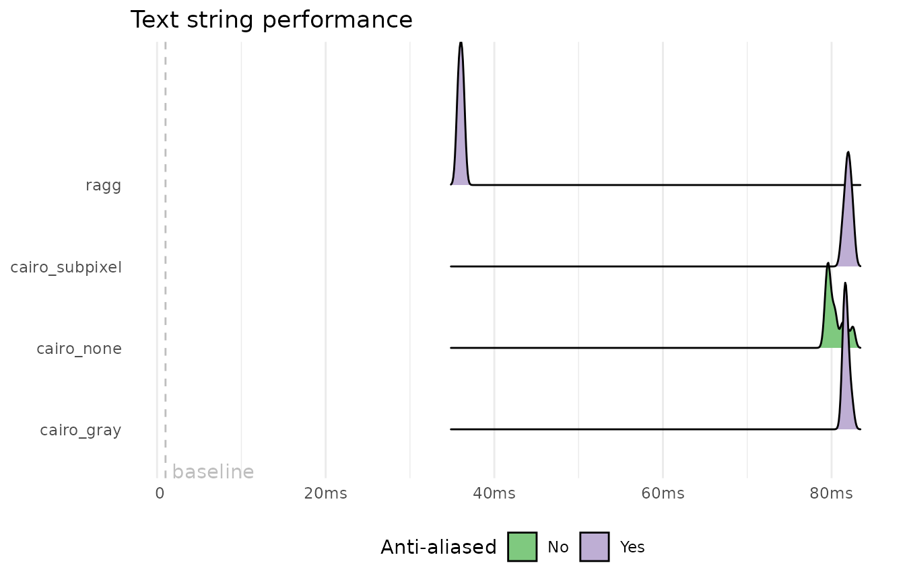
Once again Xlib surprises with a significantly slower font handling than its anti-aliased peers. ragg is slightly faster than cairo again but not by much. In general, text rendering is governed as much by how quickly the code looks up glyphs in the font database as it is about rendering speed.
Complex example
All of these primitives can be difficult to summarize. In general, it appears that ragg has a small but consistent lead in performance among the anti-aliased devices safe for a few areas. The last benchmark will tie it all together in a more complete graphic made using ggplot2 (don’t worry about the quality of the graphic — we are simply piling on layers of stuff):
p <- ggplot(diamonds, aes(carat, price)) +
geom_hex() +
geom_point(shape = 1, size = 0.05, colour = 'white') +
geom_smooth() +
facet_wrap(~clarity) +
labs(title = '5 things you didn\'t knew about the diamonds dataset',
subtitle = 'You won\'t believe number 4',
caption = 'Source: The ggplot2 package')
p
We will prebuild the plot so mainly rendering will be measured
p <- ggplotGrob(p)
void_dev()
b <- system.time(plot(p))
invisible(dev.off())
res <- all_render_bench(plot(p))
plot_bench(res, 'Complex composite performance', b)
We see that with complex graphics the speed benefit of the non anti-aliased Xlib device disappears (probably due to its slow text rendering). Ragg is clearly the fastest anti-aliased device, but it should be noted that the example deliberately included both stroked and filled shapes. When only plotting with filled shapes, the speed advantage might decrease or disappear. Something else that we haven’t discussed here, but may affect speed in such a complex graphic is clipping speed (not drawing elements outside of the clipping region).
Conclusion
One point to gather from this is that anti-aliasing will cost you in specific situations, but it will even out in complex tasks. Xlib and non anti-aliased cairo are almost consistently the fastest at rendering primitives, though both show surprising problems in some tasks. If you want anti-aliasing (you generally do), then ragg is consistently the fastest options, with a general speed gain of around ~33% compared to cairo. In places where the speed gain is less, it is mainly because cairo chooses not to use anti-aliasing for fill. The decision to not anti-alias fill is questionable in my opinion. If a stroke is also drawn it is indeed immaterial whether the underlying fill is anti-aliased, that is, unless the stroke is transparent. If no stroke is drawn the result is obviously ugly. It could be argued that the device could inspect whether a solid stroke was going to be drawn and make a choice based on that, but line width comes into effect as well. A very thin stroke will not be able to hide the jagged non anti-aliased fill completely and result in unacceptable visual artefacts. Because of this, ragg is designed to simply always use anti-aliasing. At worst, it makes it only as performant as the cairo counterpart, at best it is faster and with a higher quality output.
Advanced features
The graphic engine has lately seen a lot of exciting development, with support for more advanced rendering features such as gradients, pattern fills, arbitrary clipping paths etc. Support for this is depending on the device and is mainly supported by Cairo and PDF in the base installation. ragg will strive to keep up with the new features though it may lag behind a bit as development takes time.
Most of these new features are only available through grid so we can’t avoid a bit of overhead when measuring the performance of these.
Clipping paths
Clipping paths allows you to define an arbitrary clipping region based on any complex grob you may define. Passing this grob to the clip argument of the viewport will use the grob as a clipping region.
library(grid)
clip <- pointsGrob(runif(500), runif(500), default.units = 'npc')
segments <- segmentsGrob(runif(100), runif(100), runif(100), runif(100),
vp = viewport(clip = clip))
void_dev()
plot.new()
b <- system.time(grid.draw(segments))
invisible(dev.off())
res <- all_render_bench(grid.draw(segments))
plot_bench(res, 'Complex clip path performance', b)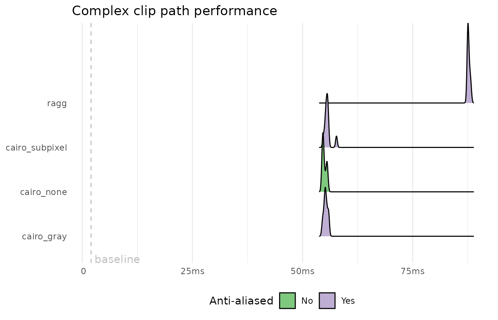
We can see that ragg fares much better than cairo when it comes to rendering with arbitrary clipping paths. I can’t comment on how the cairo implementation works, but ragg is able to perform the clipping at the rasterisation level rather than performing boolean operations on the geometries which makes it very efficient as it basically surmounts to rasterising the clipping path in those areas where the main graphic is getting rendered.
Masks
Masks allow you to define the alpha level of a layer based on information from another layer. As such, it can perform the same things as clipping paths and then some, but the underlying idea is very different. It also requires you to render to a whole new canvas when creating the mask so it has some overhead not present in clipping paths depending on the resolution of the device.
mask <- pointsGrob(runif(2000), runif(2000), default.units = 'npc', pch = 16,
gp = gpar(col = '#00000077'))
segments <- segmentsGrob(runif(100), runif(100), runif(100), runif(100),
vp = viewport(mask = mask))
void_dev()
plot.new()
b <- system.time(grid.draw(segments))
invisible(dev.off())
res <- all_render_bench(grid.draw(segments))
plot_bench(res, 'Complex mask performance', b)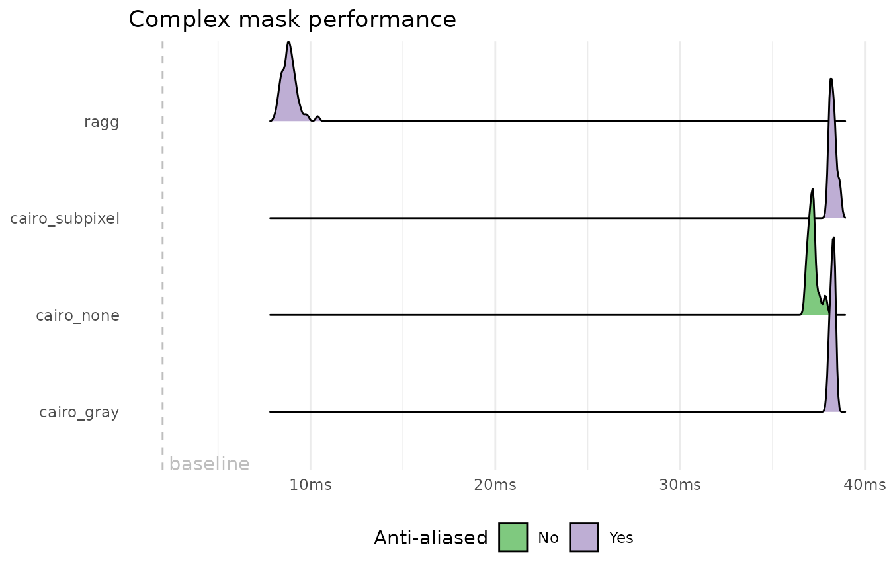
We see that, at least at the resolutions these tests are performed at, alpha masks are much faster than clipping paths for both ragg and cairo - ragg is still quite a bit faster, but cairo’s mask performance is faster than ragg’s clipping path performance.
Gradients
Gradients allow you to produce a smooth transition between a range of colours, either along a line or in a radial manner.
circles <- circleGrob(runif(2000), runif(2000), r = unit(0.5, 'char'),
gp = gpar(fill = linearGradient(c('black', 'transparent', 'blue'))))
void_dev()
plot.new()
b <- system.time(grid.draw(circles))
invisible(dev.off())
res <- all_render_bench(grid.draw(circles))
plot_bench(res, 'Gradient performance', b)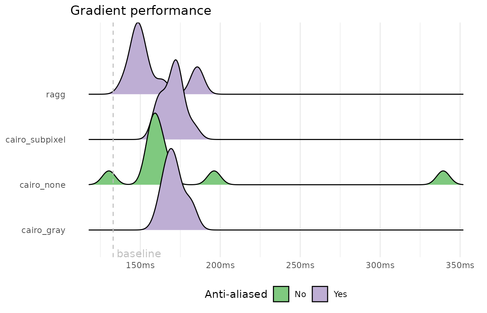 Gradients are performing about on par between ragg and cairo. Beware that gradients cannot be defined in a vectorised manner so all the elements in your grob will have to share the same gradient. This means that drawing 2000 circles with separate gradients for each will be much slower than drawing them with a shared gradient as you have to create and draw a grob for each.
Patterns
Patterns are another fill type alongside gradients. They can take any grob which will be rendered to a separate canvas and then used as fill with different extend modes (repeat, reflect, pad, etc.)
segments <- segmentsGrob(runif(1000), runif(1000), runif(1000), runif(1000),
gp = gpar(col = sample(palette(), 1000, TRUE)))
pat <- pattern(segments, width = 0.1, height = 0.1, extend = 'reflect')
circles <- circleGrob(runif(1000), runif(1000), r = unit(1, 'char'),
gp = gpar(fill = pat))
void_dev()
plot.new()
b <- system.time(grid.draw(circles))
invisible(dev.off())
res <- all_render_bench(grid.draw(circles))
plot_bench(res, 'Pattern performance', b)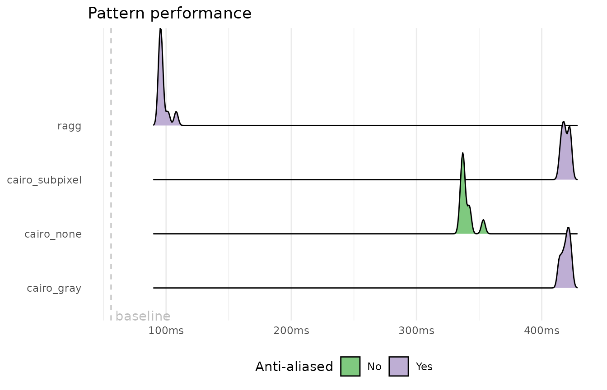
We see once again a clear performance upper-hand with ragg. The same caveats that apply to gradients are there for patterns, unfortunately, so using multiple different patterns will have considerable overhead as multiple grobs need to be created.
Session info
sessioninfo::session_info()
#> ─ Session info ──────────────────────────────────────────────────────
#> setting value
#> version R version 4.5.1 (2025-06-13)
#> os Ubuntu 24.04.3 LTS
#> system x86_64, linux-gnu
#> ui X11
#> language en
#> collate C.UTF-8
#> ctype C.UTF-8
#> tz UTC
#> date 2025-09-02
#> pandoc 3.1.11 @ /opt/hostedtoolcache/pandoc/3.1.11/x64/ (via rmarkdown)
#> quarto NA
#>
#> ─ Packages ──────────────────────────────────────────────────────────
#> package * version date (UTC) lib source
#> bench 1.1.4 2025-01-16 [1] RSPM
#> bslib 0.9.0 2025-01-30 [1] RSPM
#> cachem 1.1.0 2024-05-16 [1] RSPM
#> cli 3.6.5 2025-04-23 [1] RSPM
#> desc 1.4.3 2023-12-10 [1] RSPM
#> devoid * 0.1.2 2023-04-25 [1] RSPM
#> digest 0.6.37 2024-08-19 [1] RSPM
#> dplyr 1.1.4 2023-11-17 [1] RSPM
#> evaluate 1.0.5 2025-08-27 [1] RSPM
#> farver 2.1.2 2024-05-13 [1] RSPM
#> fastmap 1.2.0 2024-05-15 [1] RSPM
#> fs 1.6.6 2025-04-12 [1] RSPM
#> generics 0.1.4 2025-05-09 [1] RSPM
#> ggplot2 * 3.5.2 2025-04-09 [1] RSPM
#> ggridges 0.5.7 2025-08-27 [1] RSPM
#> glue 1.8.0 2024-09-30 [1] RSPM
#> gtable 0.3.6 2024-10-25 [1] RSPM
#> hexbin 1.28.5 2024-11-13 [1] RSPM
#> htmltools 0.5.8.1 2024-04-04 [1] RSPM
#> jquerylib 0.1.4 2021-04-26 [1] RSPM
#> jsonlite 2.0.0 2025-03-27 [1] RSPM
#> knitr 1.50 2025-03-16 [1] RSPM
#> labeling 0.4.3 2023-08-29 [1] RSPM
#> lattice 0.22-7 2025-04-02 [3] CRAN (R 4.5.1)
#> lifecycle 1.0.4 2023-11-07 [1] RSPM
#> magrittr 2.0.3 2022-03-30 [1] RSPM
#> Matrix 1.7-3 2025-03-11 [3] CRAN (R 4.5.1)
#> mgcv 1.9-3 2025-04-04 [3] CRAN (R 4.5.1)
#> nlme 3.1-168 2025-03-31 [3] CRAN (R 4.5.1)
#> pillar 1.11.0 2025-07-04 [1] RSPM
#> pkgconfig 2.0.3 2019-09-22 [1] RSPM
#> pkgdown 2.1.3 2025-05-25 [1] RSPM
#> profmem 0.7.0 2025-05-02 [1] RSPM
#> purrr 1.1.0 2025-07-10 [1] RSPM
#> R6 2.6.1 2025-02-15 [1] RSPM
#> ragg * 1.4.0.9000 2025-09-02 [1] local
#> RColorBrewer 1.1-3 2022-04-03 [1] RSPM
#> rlang 1.1.6 2025-04-11 [1] RSPM
#> rmarkdown 2.29 2024-11-04 [1] RSPM
#> sass 0.4.10 2025-04-11 [1] RSPM
#> scales 1.4.0 2025-04-24 [1] RSPM
#> sessioninfo 1.2.3 2025-02-05 [1] RSPM
#> systemfonts 1.2.3 2025-04-30 [1] RSPM
#> textshaping 1.0.1 2025-05-01 [1] RSPM
#> tibble 3.3.0 2025-06-08 [1] RSPM
#> tidyr 1.3.1 2024-01-24 [1] RSPM
#> tidyselect 1.2.1 2024-03-11 [1] RSPM
#> vctrs 0.6.5 2023-12-01 [1] RSPM
#> withr 3.0.2 2024-10-28 [1] RSPM
#> xfun 0.53 2025-08-19 [1] RSPM
#> yaml 2.3.10 2024-07-26 [1] RSPM
#>
#> [1] /home/runner/work/_temp/Library
#> [2] /opt/R/4.5.1/lib/R/site-library
#> [3] /opt/R/4.5.1/lib/R/library
#> * ── Packages attached to the search path.
#>
#> ─────────────────────────────────────────────────────────────────────